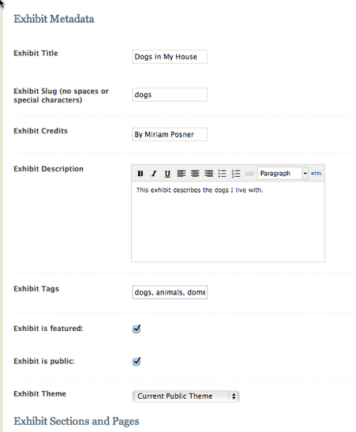
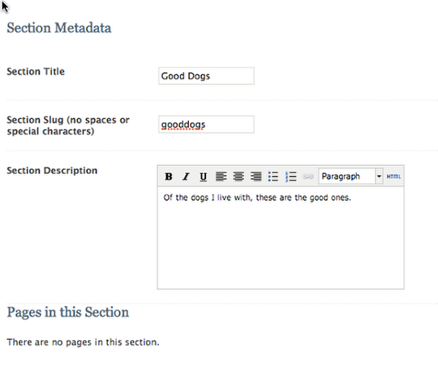
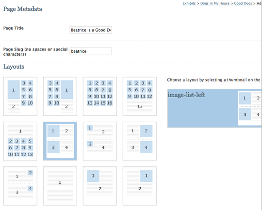
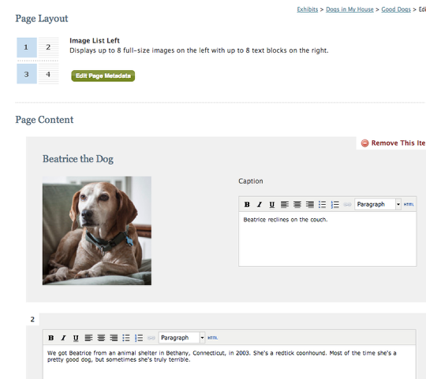
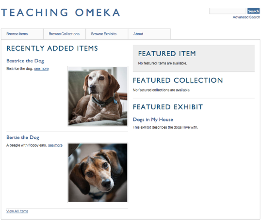

April 24, 2013
Creating an Omeka.net Exhibit
- Reviewed by
Adam Crymble
and Sheila Brennan
In the lesson Up and Running with Omeka.net, you added items to your Omeka.net site and grouped them into collections. Now you are ready for the next step: taking your users on a guided tour through the items you have collected.
Before you begin: Plan your exhibit
It pays to do some thinking before you launch into creating an exhibit. You will be creating both sections and pages, and you will need to give some thought to the argument you want to make and how you intend to make it. In this lesson that follows, I use the silly example of my dogs. But what if I were discussing, say, silent film? My sections might be thematic (comedies, romances, dramas), chronological (early silent film, the transitional period, classical era), or stylistic (modernist, impressionist, narrative). It all depends on the message I want to convey to the site’s visitors. You might draw out a map of your exhibit, showing where you want to put each digital asset.
Add an exhibit

A collection is just a list of objects. An exhibit, on the other hand, is a guided tour through your items, complete with descriptive text and customized layouts. To create one, click on the Exhibits tab and then Add an exhibit. Fill out the form on the top half of the page. A slug is a machine-readable name for your exhibit and will become part of your URL. The slug of this lesson is “creating-an-omeka-exhibit,” which you can see in the URL at the top of your browser.
Add a section

Every exhibit has sections and pages — like the chapters and individual pages in a book. Add a new section by clicking on the green Add Section button and then filling out the information on the following page.
Add a page

Pages are where you will stick the actual items in your exhibit. Click on the green Add Page button. On the following page, you will enter some information and pick a layout for your exhibit page. The small blue squares indicate item thumbnails, the large blue squares indicate full-sized images, and the lined areas indicate descriptive text. Pick a layout; you can change it later. Then click on Save Changes.
Add items to your page

On the page that follows, you will see a numbered grid. You will fill in that grid by attaching items (in the places indicated by blue boxes) and typing in descriptive information about your item. Remember, an exhibit is a kind of guided tour through your items, so try to write descriptions that guide the reader from one item to the next. When you are finished adding items, you can add another page, or another section, or both.
When you are done, return to your public site to see how your Omeka site looks.
You have an Omeka site!

Now your site has items, collections, and an exhibit — all the basic units of an Omeka site.
Further Resources
- The Omeka team has put together great resources on the software’s help pages